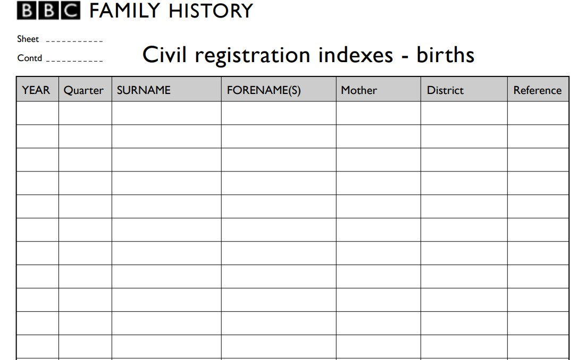
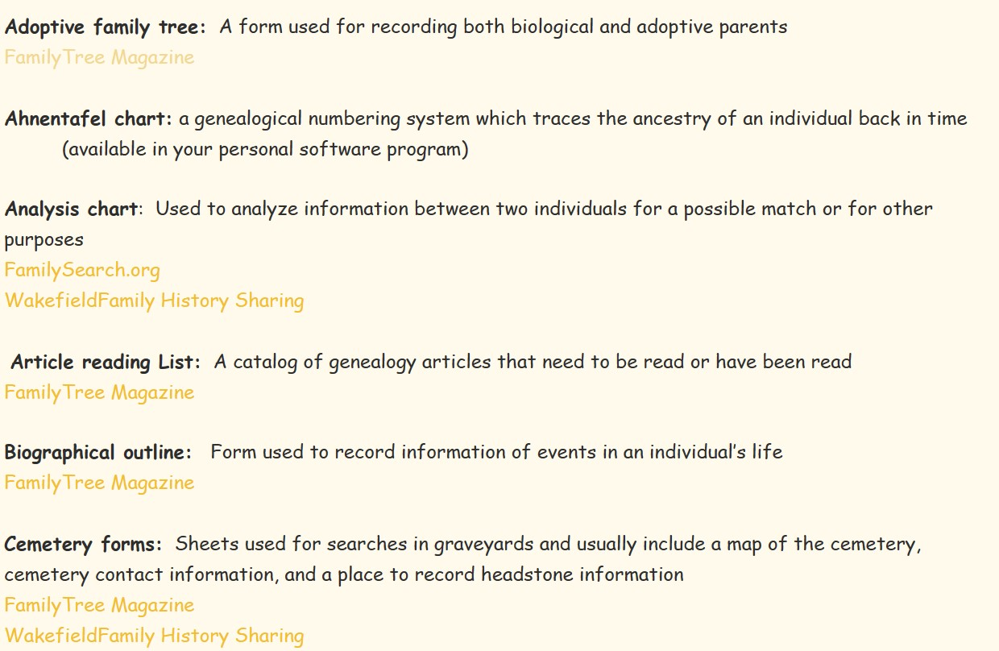

This one is intresting. I don't know the purpose of why my grandma has it. It's filled with links that lead to PDFs, broken links, and missing pages. From what I can tell, it's supposed to help show what type of documents that we use to keep track of things like birth, marriage, death, ect. Others seem to try and show how you fit in our family tree. It's all intresting, and something I'll have to figure out.
 